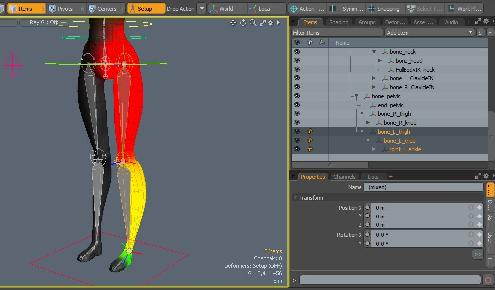
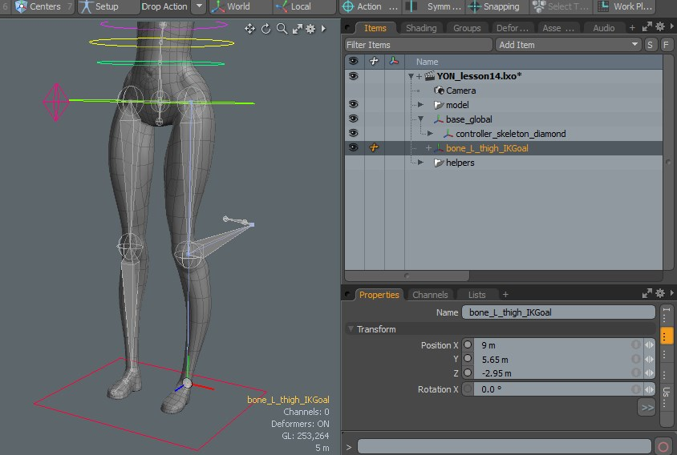
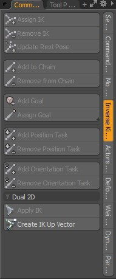
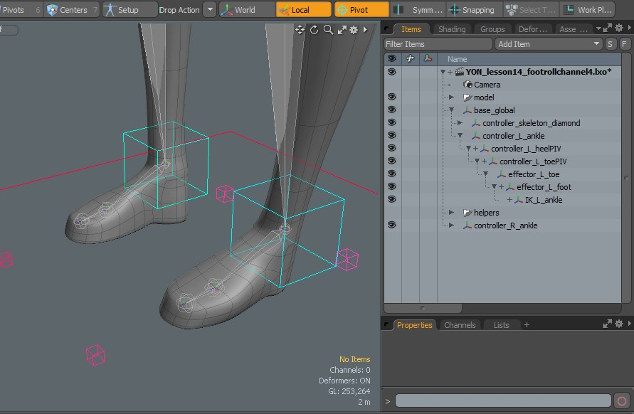
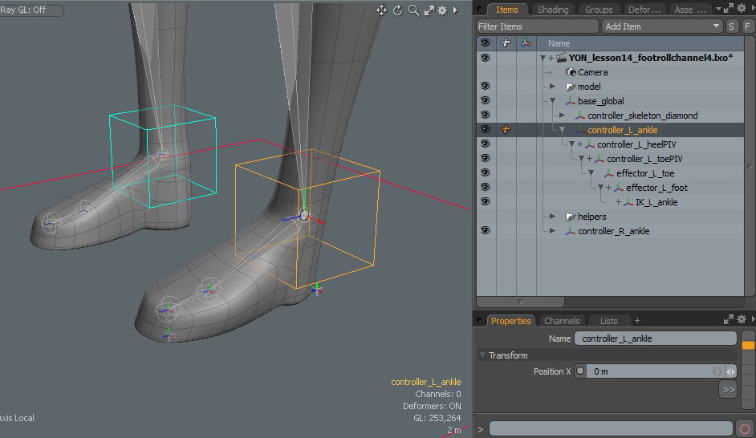
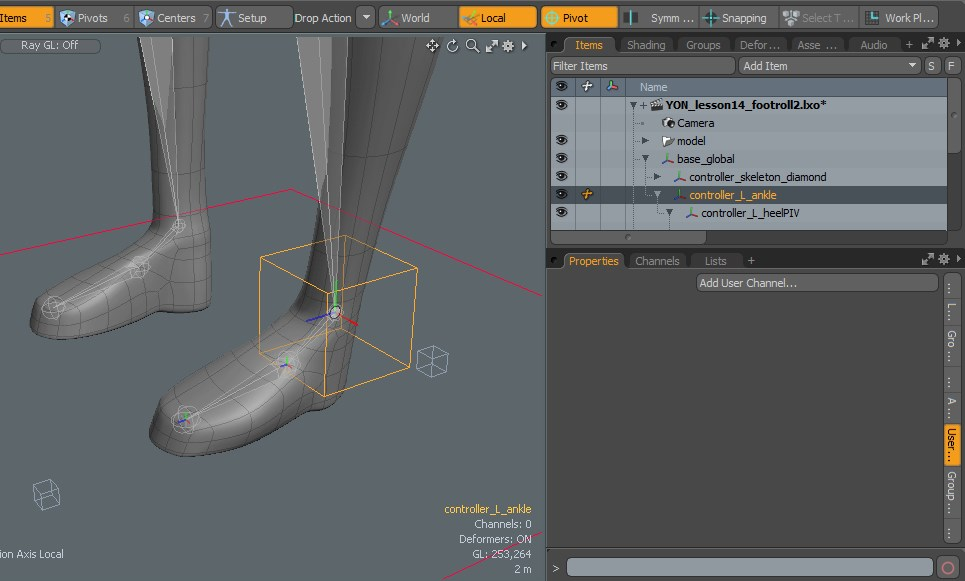
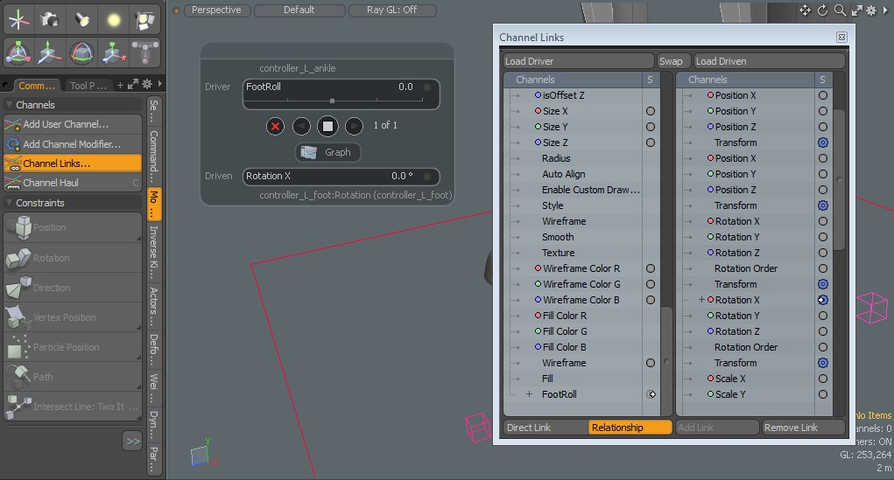

Notebook Lesson 14
- Yonseo Rigging Kit for Modo
- Projectfiles:
- project/YON_lesson14.lxo
- project/YON_lesson14_final.lxo
Inverse Kinematics Legs
Making the Leg Control using IK
With inverse kinematics we are working with tools that work automatically for us. It's a similar process to creating locators and adding modifiers only here IK does the work. We simply have to assemble.1) First Enter [Setup] and select 3 bones in our leg. 
 In our hierachy a IKGoal was created on our skeleton heel.
When we selected 3 bones and assigned the IK, the last bone selected will create a locator.
This locator named 'bone_L_thigh_IKGoal' will be the ankle.
In our hierachy a IKGoal was created on our skeleton heel.
When we selected 3 bones and assigned the IK, the last bone selected will create a locator.
This locator named 'bone_L_thigh_IKGoal' will be the ankle.
Tip:
If we Exit [Setup] and our rig has a problem open the helpers folder included in the project file. This includes locators that have our leg position already in place. Simply [drop action: match] the position of the 'joint_L_ankle' bone to the 'helper_L_ankle'. The leg will return to its position then with our 'joint_L_ankle' selected [zero > all] transformations.

- If you are rigging your own model and having problems,
be sure to check lesson #10 on problem solving or click here
Lesson #10
- When we move the leg foward our knee bends backwards. This is great if we want to animate an
ostrich, however we don't want this kind of animation in a human character.
2) Knee control
Enter [Setup] With our Dual Joint PlanarIK selected we can now click on [Create IK Up Vector] on the left panel. - 1) Rename the 'IK Up Vector' to 'controller_L_knee'. This will be our knee controll.
- 2) Change the shape to a pyramid and increase its size. Now perform a [drop action: match] and drop it over the knee joint 'bone_L_knee'.
- 3) Exit [Setup] and activate [Local] on the top right. This is important so the knee does not rotate or move when we position our knee control.
Move the knee control foward. By moving the knee controller away from the heel it will prevent our knee from moving backwards when we move our leg.
3) Making the foot roll
Let's rename 'bone_L_thigh_IKGoal' to 'IK_L_ankle'. Now take a look at how the foot roll is created through the hierachy.  First we have the 'controller_L_ankle' which is the box shape around the ankle. This has been positioned to match the bone 'joint_L_ankle'. This is a child of the 'base_global'. This box control will be a parent to all the locators we created earlier. Everything else will go below 'controller_L_ankle'. Finally 'base_global' will be the parent to 'controller_L_ankle'.

4) User Channels
With user channels we can create our own slider to increase or decrease a value. This becomes useful for animation when we want a custom control such as a face rig or a foot roll. When our character walks we don't want to animate the bending of the heel and toe every step of the walking animation. By creating a custom channel we can automate this process.Rigging can be a visual task as well as a technical one. So were going to do this in steps.
Step 1) Creating a User Channel
Select the 'controller_L_ankle'. Create a user channel and name it 'FootRoll' Load Driver is what we use to control the the animation. Load Driven is what is being affected by the driver.
Step 2) Links
 Now select 'controller_L_foot' and click on [Load Driven] on the top right Channel Links window.
With 'controller_L_foot' selected press 'e' and rotate the foot. I am checking the axis that makes the foot rotate foward and
backward. When you rotate the 'controller_L_foot' it will highlight in the Channel Links window.
These are the rotations we want to use. In this case it is the X axis that I want to use.
Now select 'controller_L_foot' and click on [Load Driven] on the top right Channel Links window.
With 'controller_L_foot' selected press 'e' and rotate the foot. I am checking the axis that makes the foot rotate foward and
backward. When you rotate the 'controller_L_foot' it will highlight in the Channel Links window.
These are the rotations we want to use. In this case it is the X axis that I want to use.
What's the difference between Direct Link and Relationship?
Direct Link will match both values meaning when we rotate the 'controller_L_ankle' it will also affect the 'controller_L_foot'. However the foot controller can only rotate until it reaches a stopping point.Relationship will allow us to continue this rotation and gives us more felxibility. So for that reason we use Relationship.
Step 3) Channel Haul
 Toggle the [Channel Haul] button or click it twice. A window will appear. Change your Driver FootRoll to 0.5. Notice that nothing has happened to our foot. That's because we need to tell MODO what to do with this foot control when it is at 0.5To do this we use Save States. Save States are like pressing pause on a film. The saved state acts like a bookmark and you can return to that state at any time.